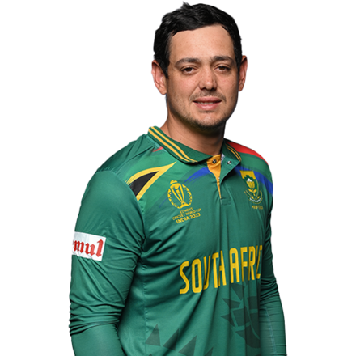
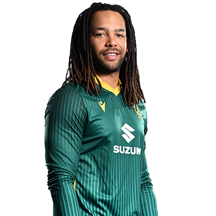
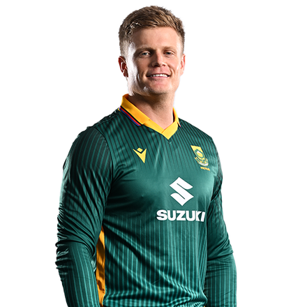
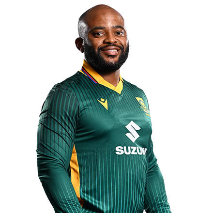
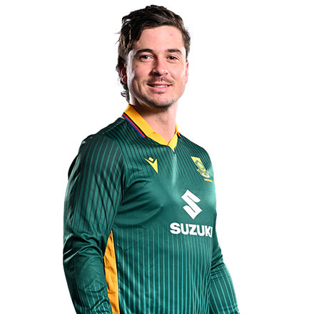
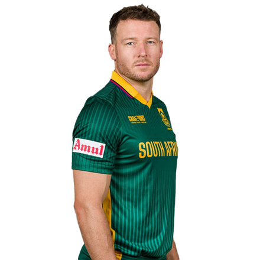
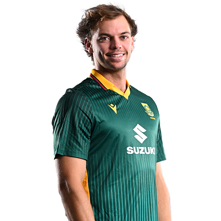

Overall opposition overview
All South Africa batters on one page vs right-arm pace, field options, how they score and get out. The ◎ buttons open a field map.
| Batter | Plan for right-arm pace | Field |
|---|---|---|
 Quinton de KockLHB · Opener | Bowl good length pitching wide outside off while swinging away. | Too few balls to set a field. |
 Tony de ZorziLHB · Opener | Bowl back of a length pitching around leg while seaming away. | Too few balls to set a field. |
 Ryan RickeltonLHB · Opener | Bowl back of a length pitching outside off while seaming away. | Too few balls to set a field. |
 Aiden MarkramRHB · Top order Aiden MarkramRHB · Top order | Bowl good length pitching outside off while seaming in. | Too few balls to set a field. |
 Temba BavumaRHB · Top order | Bowl back of a length pitching outside off while seaming in / swinging away. | Too few balls to set a field. |
 Matthew BreetzkeRHB · Top order | Bowl full pitching on the stumps. | Too few balls to set a field. |
 David MillerLHB · Middle order | Bowl good length pitching on the stumps while seaming away / swinging in. | Too few balls to set a field. |
 Marco JansenRHB · Middle order Marco JansenRHB · Middle order | Bowl good length pitching wide outside off. | Too few balls to set a field. |
 Tristan StubbsRHB · Middle order | Bowl back of a length pitching wide outside off. | Too few balls to set a field. |
 Corbin BoschRHB · Lower order Corbin BoschRHB · Lower order | No clear length/line target. | Too few balls to set a field. |
How they score and get out
| Batter | Balls | BPD | False shot | Scores mostly | Vs the short ball | Most often out |
|---|---|---|---|---|---|---|
Quinton de Kock | 2265 | 48 | 17.9% | off (49% of runs) | 16% false (47 balls) — vs all pace | Caught in the field (34%) |
Tony de Zorzi | 434 | 3 out | 37.7% | leg (35% of runs) | too few | Caught in the field (100%) |
Ryan Rickelton | 466 | 36 | 32.1% | straight (47% of runs) | too few | Caught behind (38%) |
| Aiden Markram | 1235 | 43 | 18.8% | off (44% of runs) | 33% false (40 balls) | Caught in the field (48%) |
Temba Bavuma | 1090 | 50 | 18.4% | leg (41% of runs) | too few | Caught in the field (45%) |
Matthew Breetzke | 374 | 53 | 26.0% | off (46% of runs) | too few | LBW (43%) |
David Miller | 1244 | 41 | 20.7% | off (46% of runs) | 18% false (52 balls) | Caught in the field (37%) |
| Marco Jansen | 211 | 26 | 18.9% | leg (38% of runs) | too few | Bowled (50%) |
Tristan Stubbs | 254 | 42 | 28.0% | leg (49% of runs) | too few | Caught behind (50%) |
| Corbin Bosch | 96 | 1 out | 31.5% | off (52% of runs) | too few | Caught in the field (100%) |